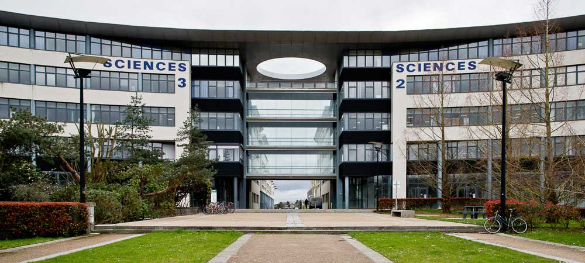
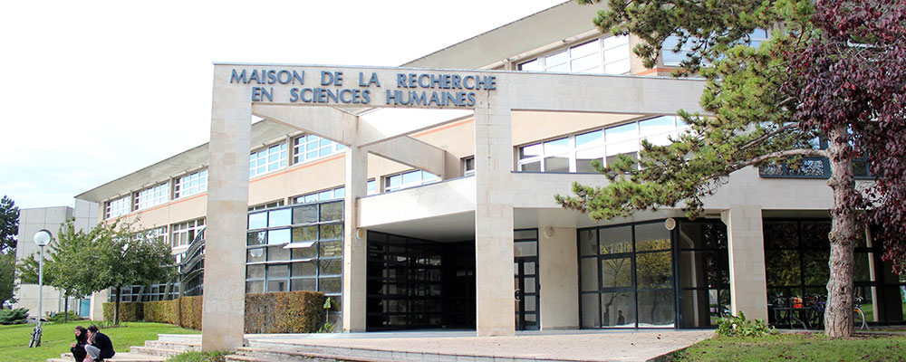

University Grenoble Alpes

Grenoble Images Paroles Signal Automatique (GIPSA)
The GIPSA-Lab intervenes on the technical and computer aspects of the project, particularly concerning signal processing and embedded systems engineering. It works with the LPNC on the simulation and prototyping of augmented reality devices, integrating auditory and tactile elements to restore the spatial environment to visually impaired users.
Laboratoire de psychologie et NeuroCognition (LPNC)
The LPNC specializes in perceptual and cognitive processes related to space and movement. In SAM-Guide, the laboratory contributes to modeling the mechanisms of spatial perception without vision and actively participates in the design of sensory interfaces that allow blind users to aim at targets using 3D sounds. Its approach is based on rigorous protocols from experimental psychology and cognitive neuroscience.
Paris
Centre Borelli – ENS Paris Saclay
Replacing the CMAP since 2023, the Centre Borelli brings expertise in computational acoustics and sound spatialization. It develops algorithms for real-time 3D sound representation, allowing users to intuitively hear the position of objects or targets in space. This work is fundamental for sports applications such as laser-run or navigation scenarios.

Centres de Mathématiques appliquées (CMAP)
Active partner during the early years of the project, the CMAP developed high-precision mathematical models and acoustic simulation tools. Its work on the digital representation of sound propagation laid the groundwork for the first experiments on spatialization, particularly for sports uses. Since 2023, its missions have been taken over by the Centre Borelli.
[Partner until 2023]
University of Normandy
Rouen
Laboratoire d’informatique, de traitement de l’information et des systèmes (LITIS)
The LITIS is responsible for developing tactile guidance devices. It designs tools such as intelligent vibrating belts, integrating sensors and haptic feedback, to provide navigation without vision. It also works on the fusion of multisource data (video, GPS, inertial) and on modeling an autonomous mobility system for blind people.
Caen

Centre d’études Sports et Actions motrices (CESAMS)
Specialized in movement science, the CESAMS studies motor behaviors in situations of visual impairment and participates in the design of experimental tasks such as navigation in virtual reality or simulated sports courses. Its role is crucial in adapting interfaces to the users' bodily dynamics and ensuring smooth and secure interaction.

Centre d’études et de recherche sur les risques et les vulnérabilités (CERREV)
The CERREV approaches the project from a sociological and ergonomic perspective. It evaluates real usage, the social acceptability of devices, and the obstacles to their dissemination. Its involvement ensures that the innovations of SAM-Guide are designed with and for end users, taking into account their needs, habits, and living contexts.
Centre d’études Sports et Actions motrices (CESAMS)
Specialized in movement science, the CESAMS studies motor behaviors in situations of visual impairment and participates in the design of experimental tasks such as navigation in virtual reality or simulated sports courses. Its role is crucial in adapting interfaces to the users' bodily dynamics and ensuring smooth and secure interaction.
Centre d’études et de recherche sur les risques et les vulnérabilités (CERREV)
The CERREV approaches the project from a sociological and ergonomic perspective. It evaluates real usage, the social acceptability of devices, and the obstacles to their dissemination. Its involvement ensures that the innovations of SAM-Guide are designed with and for end users, taking into account their needs, habits, and living contexts.
The SAM-Guide consortium brings together laboratories with complementary expertise in cognitive sciences, computer science, signal processing, applied mathematics, psychology, ergonomics, and social sciences. This multidisciplinary collaboration makes it possible to design innovative and human-centered technological solutions, while taking into account the scientific, technical, and societal challenges of the project. By pooling their skills, the partners contribute to advancing research on accessibility, autonomy, and inclusion for people with visual impairments.